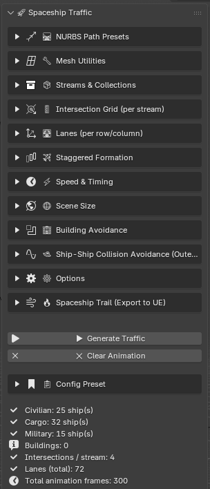
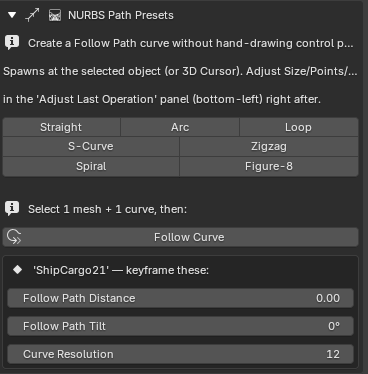
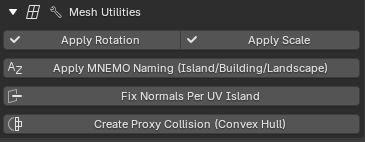
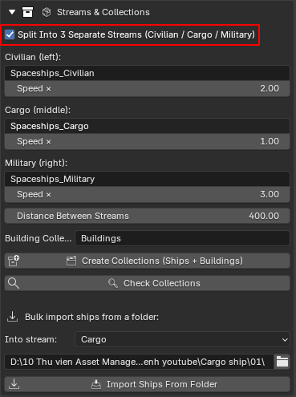
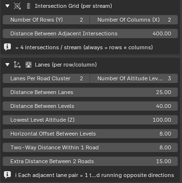
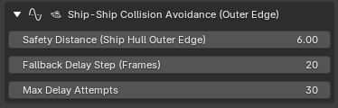
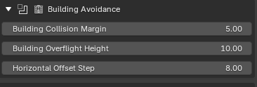
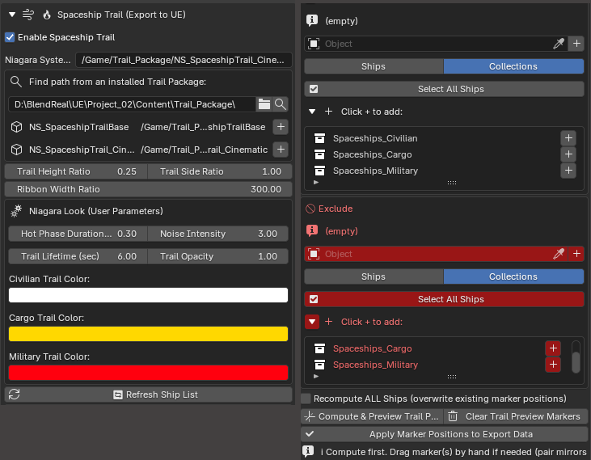
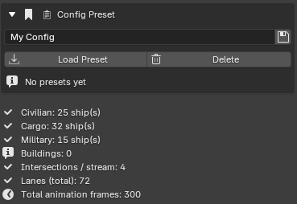

BlendReal® Spaceship Traffic
-
Procedural Blender add-on for spaceship traffic — automatically generates lane/intersection networks, avoids buildings using real raycasts, and performs true ship-to-ship avoidance using a Space-Time Reservation system. Includes a flight path toolkit (7 NURBS Path presets + Follow Curve), a Bake Animation/Restore Constraint toolkit, mesh utilities, and an optional engine exhaust effect export to Unreal Niagara via BlendReal®.
-
The add-on operates in Standalone Mode — Unreal Engine is not required — all traffic features run entirely within Blender.
-
Alternatively, the Spaceship Trail (Export to UE) feature requires the BlendReal® - Cinematic Pipeline UE5 add-on to automatically transfer Niagara parameter values into UE.

⚙️System Requirements
- Operating System: Windows 10/11 64-bit
- Blender: 4.5, 5.0, or 5.2 (LTS)
- Unreal Engine is not required for the main traffic features
- BlendReal® (separate add-on) is required to use the Spaceship Trail feature
🛠️Installation
- In Blender, go to Edit > Preferences > Add-ons
- Click Install from Disk... and select the
.zipfile - Tick the checkbox next to BlendReal® Spaceship Traffic to enable the add-on
- Open the Sidebar (press
N) in the 3D Viewport and find the Spaceship Traffic tab
🔷Basic Workflow
- Prepare Your Models: have your spaceship models ready (in
.blendformat, with one or several ships per file), along with building/obstacle models in the scene - Create Collections: in the 📦 Streams & Collections section, click 🗂 Create Collections (Ships + Buildings) to automatically create the required Collections with the correct names (automatically based on whether "Split Into 3 Separate Streams" is on/off)
- Import Ships: still in 📦 Streams & Collections — select the folder containing the spaceship
.blendfiles in Ship File Folder, choose which stream to import them into (Import Into Stream), then click 📥 Import Ships From Folder. Ships can all sit on top of each other at the origin at this point — Generate Traffic will redistribute them automatically - Add Buildings to the Collection: manually drag and drop the building objects into the created Collection in the Outliner
- Click ⚡ Auto-Fill From Ship Sizes (inside the 🛣️ Lanes section) — this is the recommended first step: the add-on automatically computes most of the lane/altitude spacing values based on the actual size of your imported ships instead of you guessing numbers by hand. Everything stays freely editable afterward — Generate Traffic will NOT overwrite these values
- Preview the layout (optional): also inside 🛣️ Lanes, click 👁 Create Wireframe, then adjust the Lane/Streams/Formation fields to see whether the ship placeholder boxes are arranged the way you want (see Live Layout Preview below)
- Click ▶ Generate Traffic — the add-on automatically generates animation for all ships, with real building and ship avoidance
- To start over: click ✕ Clear Animation
- To view the system report: click 🔍 Check Collections (found inside Streams & Collections; output is displayed in the System Console)
💡 Tip for new users: if you don't want to hand-tune every parameter, simply follow Import Ships → Auto-Fill From Ship Sizes → Generate Traffic and you'll immediately get a reasonable traffic layout. The sections below are only needed when you want to fine-tune things further.
✨Detailed Features
(The sections below are listed in the exact order they appear in the add-on's real Sidebar panel.)
🛤️ NURBS Path Presets
7 built-in shapes, spawned right at the selected object's location (or at the 3D Cursor if nothing is selected): Straight, Arc, Loop, S-Curve, Zigzag, Spiral, Figure-8. After creation, adjust the parameters in the "Adjust Last Operation" panel (bottom-left): - Size — overall length (Straight/Arc/S-Curve/Zigzag) or radius (Loop/Spiral/Figure-8) - Points — number of NURBS control points, higher = smoother curve - Forward Axis — which local axis the path primarily travels along - Arc Angle — Arc only: how many degrees the arc sweeps - Amplitude / Wave Cycles — S-Curve/Zigzag only: how far the path swings side to side, and how many oscillations - Turns / Height — Spiral only: number of full rotations and total distance travelled
Follow Curve: select exactly 1 mesh + 1 curve, then click — automatically adds a Follow Path constraint (named "BlendReal Follow Path"), along with Curve Resolution (how smooth the curve itself is). You only need to keyframe the 2 values that appear right below while that ship is selected: Follow Path Distance (actual distance in Blender units, not a 0–1 ratio) and Follow Path Tilt (additional banking angle).
⚠️ The Bake Auto Bank feature (automatically computing the banking angle from the curve's curvature) is currently an internal work-in-progress (WIP) and is not shown in the panel in this build — for now, adjust Tilt manually via keyframes.

🎬 Bake Animation (Location/Rotation/Scale)
- Remove Constraint After Bake — after baking, automatically removes the original Constraint (Follow Path, Track To...) to avoid double-transform conflicts; disable this if you still need to edit the Constraint afterward
- Bake Animation — bakes Location/Rotation/Scale of any selected Mesh, Camera, or Empty into real keyframes with one click, automatically backing up the original Constraint before baking
- Restore Baked Constraint — restores the exact original Constraint + Target + Action from before the last bake (only works on objects previously baked via the button above)
🔧 Mesh Utilities — standalone, no BlendReal® required
- Apply Rotation / Apply Scale — applies in batch to multiple selected meshes at once, keeping the other 2 values unchanged (Location is always preserved by both buttons)
- Apply MNEMO Naming (Island/Building/Landscape) — batch renames using a standard prefix, opening a dialog with:
- Type — Floating Island (
Island_) / Building (Building_) / Landscape (Landscape_) / Custom Prefix (your own prefix, no automatic MNEMO Tag/Collision assignment) - Base Name — the name part after the prefix (e.g. "FloatingIsland" →
Island_FloatingIsland01,02...) - Custom Prefix — only used when Type = Custom
- Start Index / Digit Count — the starting number and zero-padding digit count (2 digits: 01, 02...; 3 digits: 001, 002...)
- Fix Normals Per UV Island — recalculates normals per UV island in a radial outward direction (based on the object's center of mass, independent of topology) — handles cases where Blender's default Recalculate Outside / Merge+Recalculate fail
- Create Proxy Collision (Convex Hull) — duplicates MNEMO-named meshes, splits them by connected "island" pieces, with 2 Method options:
- Convex Hull Per Piece (recommended) — always clean regardless of how broken the source mesh is, preserves concavities between pieces
- Voxel Remesh (fallback) — rebuilds the surface via a distance field, with extra [Voxel] Resolution, [Voxel] Adaptivity, [Voxel] Weld Vertices Before Remesh, [Voxel] Merge Distance parameters
- The result is named so UE automatically recognizes it as Collision

📦 Streams & Collections
- Split Into 3 Separate Streams (Civilian / Cargo / Military) — on (default): each ship type is pulled from its own Collection, flying its own altitude band and speed factor, never mixing, while still sharing one Space-Time Reservation ledger so they still avoid each other correctly at stream crossing points. Off: falls back to a single shared ship Collection
- Civilian / Cargo / Military Collection + a Speed × multiplier for each stream (default Civilian ×0.85, Cargo ×0.6, Military ×1.35 — applied on top of the shared Minimum/Maximum Speed)
- Distance Between Streams — the horizontal offset (top view, X axis) between the 3 stream areas: Civilian on the left, Cargo in the middle, Military on the right, each with its own non-overlapping intersection grid
- Building Collection — the Collection containing buildings/obstacles
- 🗂 Create Collections (Ships + Buildings) — automatically creates the required Collections (using the names set in the fields above) if they don't already exist
- 🔍 Check Collections — prints a system report to the System Console
- Import Into Stream + Ship File Folder (.blend) + 📥 Import Ships From Folder — batch imports every ship from all
.blendfiles in a folder into the Collection of the chosen stream, with a progress bar + elapsed time counter in the viewport, automatically skipping Cameras/Lights, and remembering previously imported files to prevent duplicates

🚦 Intersection Grid (per stream)
- Number Of Rows (Y) / Number Of Columns (X) — the number of rows/columns of the intersection grid. The actual number of intersections is ALWAYS Rows × Columns (since every road axis runs the full length of the grid, you can't get an arbitrary intersection count like 3, 5, 7 unless the grid has only 1 row/column)
- Distance Between Adjacent Intersections — the distance between the centers of 2 adjacent intersections (same row or same column)

🛣️ Lanes (per row/column)
- Lanes Per Road Cluster — the number of lanes in EACH row/column of the grid (not the total lane count for the whole scene) — always use an EVEN number, since every 2 adjacent lanes pair up into 1 two-way "road"
- Number Of Altitude Levels — the number of altitude (Z) levels flying simultaneously within one stream
- When 3 Streams is on, the 6 spacing fields below get separate columns for Civilian / Cargo / Military:
- Dist. Lanes (Distance Between Lanes) — the distance between 2 neighboring two-way "roads"
- Dist. Levels (Distance Between Levels) — the spacing between 2 adjacent altitude levels
- Lowest Alt Z (Lowest Level Altitude) — the lowest altitude, used as the base the levels above stack on
- Hor. Offset (Horizontal Offset Between Levels) — the alternating horizontal offset between even/odd levels, for a more natural layout
- 2-Way Dist. (Two-Way Distance Within 1 Road) — the distance between the 2 opposing lanes within the SAME road — should be set MUCH smaller than Distance Between Lanes
- Extra Dist. (Extra Distance Between 2 Roads) — an EXTRA gap (on top of Distance Between Lanes) between 2 adjacent lane pairs
⚡ Auto-Fill From Ship Sizes (recommended): a one-time action — automatically fills Distance Between Lanes / Distance Between Levels / Two-Way Distance / Extra Distance for each stream based on its largest ship's radius, and lowers the Vertical/Horizontal Step Ratio to a safe value (≤0.4) so Vertical Staggered Slot never gets clamped, regardless of ship size. Lowest Level Altitude Z is stacked in order Civilian → Cargo → Military (each step taking the LARGER of Distance Between Streams or the stream-below's own vertical span) — guaranteeing no altitude overlap between streams without an oversized gap for normal-sized fleets. Horizontal Offset Between Levels is copied as-is from Civilian (purely cosmetic, not size-related). Everything stays freely editable afterward — Generate Traffic will NOT overwrite these values again.
👁️ Live Layout Preview (lives inside the Lanes section)
- 👁 Create Wireframe — creates wireframe boxes sized exactly to each ship, at each ship's current position; the real ships are temporarily hidden
- Once the boxes exist, adjust any Lane/Streams/Formation field — the layout updates live on the boxes
- You can also click ▶ Generate Traffic while previewing — the add-on runs the full collision-avoidance pass ON THE BOXES (faster than running it on real, detailed-mesh ships), while still using the ships' REAL radius for safety calculations
- ✅ Apply Wireframe — once you're happy with it, brings back the real ships and applies the final result to them
💡 This is a tool for previewing a reasonable layout — the final, accurate result always comes from clicking ▶ Generate Traffic on the real ships (via Apply Wireframe, or directly if you're not using the preview).
✈️ Staggered Formation
- Staggered Slots — Horizontal / — Vertical (Z) — the number of horizontal/vertical offset positions in a lane's staggered formation, letting multiple ships share a lane without overlapping
- Vertical / Horizontal Step Ratio — the vertical (Z) step = this ratio × the horizontal step — usually kept below 1, since the Z gap between levels is limited
- Group Ships By Size — OFF (default, same as previous versions): ships are spread across lanes in list order, and the staggered step is computed once from the largest ship radius in the WHOLE stream. ON: ships are first grouped by size (see Size Grouping Threshold (%) — e.g. 50 = up to 1.5x that group's smallest radius), each group gets its own lane(s), keeping small-ship lanes tightly packed instead of matching the stream's largest ship

⚡ Speed & Timing
- Minimum Speed / Maximum Speed — the random speed-factor range applied to each ship (further multiplied by the per-stream Speed ×)
- Frames To Cross Scene (Speed 1.0) — the reference number of frames to travel the full scene length at speed factor 1.0
- Total Animation Frames — every ship's animation spans exactly from frame 0 to this value
⚠️ Important note when increasing speed: if you push speed much higher relative to Total Animation Frames, a ship may finish flying its entire lane in just a few dozen frames while the displayed timeline is several hundred or thousand frames long — that ship will "flash by" quickly, then sit FROZEN for most of the remaining timeline, making it look like "most ships aren't moving." This isn't a bug — if you want to see many ships moving clearly throughout the video, keep speed moderate or shorten Total Animation Frames accordingly.
🌐 Scene Size
- Scene Radius — ships depart from and arrive beyond this radius
- Push Back Beyond Boundary — the extra distance ships start out/end beyond the Scene Radius boundary
🏢 Building Avoidance
Raycast-based path detection + actual AABB checks between the two points. When a path is blocked, the add-on attempts, in order: (1) fly OVER the building's roof, then re-check both new path segments, (2) if still blocked, shift horizontally step by step, testing both sides, (3) as a final fallback, fly to a safe altitude above both the start and end points.
- Building Collision Margin — the safety buffer around a building
- Building Overflight Height — how much higher than the building's roof to fly when passing over
- Horizontal Offset Step — the horizontal shift per step when searching for a detour

🛸 Ship-Ship Collision Avoidance (Outer Edge)
- Safety Distance (Ship Hull Outer Edge) — the minimum gap measured from the ship's OUTER HULL edge (not center-to-center) — the add-on automatically adds each ship's actual radius (from its bounding box) both when checking space-time conflicts AND when computing the staggered formation's offset step. Increasing this value does NOT stretch ships further apart along the lane — it only widens the staggered formation grid
- Fallback Delay Step (Frames) — ONLY used when 2 ships would land on the exact same staggered-formation slot (the primary avoidance mechanism is spatial, not time-based)
- Max Delay Attempts — how many fallback delay attempts before accepting the conflict
After Generate Traffic, the add-on clearly reports the number of ships that could not fully avoid collisions + suggests which parameter to increase.
⚙️ Options
- Random Seed — change to get a different ship layout
- Ship Nose Axis (Local) — the local axis the ship's nose points along (enable local axis display in the N-panel or Viewport Overlays > Axes to see the correct axis; change this if the ship flies "nose backwards" or "sideways" after Generate)
- Interpolation Type — Linear (100% match when exported to UE via BlendReal, in both export modes) or Bezier (smoother, with ease in/out — but only matches exactly when BlendReal uses "Every Frame" mode)
🔥 Spaceship Trail (Export to UE) — optional, requires BlendReal® - Cinematic Pipeline UE5
- Enable Spaceship Trail — the master switch for the trail feature
- Niagara System Path (UE) — the Content Browser path to the pre-built Niagara System in UE; can be found via Trail Package Folder + Scan for Trail Systems to automatically scan and pick
- Trail Height Ratio / Trail Side Ratio — where the trail attaches, vertically and side-to-side, scaled to each ship's OWN actual size
- Ribbon Width Ratio — the ribbon width, also scaled to each ship's own actual size
- Niagara Look (User Parameters): Hot Phase Duration (how long the white-hot → red glow lasts before fading to smoke), Noise Intensity (turbulence), Trail Lifetime (total trail length in time), Trail Opacity, plus individual trail colors per stream (or one shared color when 3 Streams is off)
- 🔄 Refresh Ship List, Include/Exclude lists (pick individual ships or whole Collections, live-linked — Exclude always wins), Recompute ALL Ships (OFF by default — safe, only computes ships without data yet; turn on to force a full recompute, with confirmation first)
- Compute & Preview Trail Points — automatically computes trail attachment points from each ship's bounding box + Nose Axis, shown as draggable Empty markers (paired markers auto-sync)
- Clear Trail Preview Markers, Apply Marker Positions to Export Data — writes the final positions into the export data

📋 Config Preset
- Save every current parameter value as a custom-named preset (💾 Save Preset), then Load Preset / Delete anytime — switch instantly between different configurations (stored as JSON).

📄License & Source Code
- You should have received a copy of the GNU General Public License along with this program. If not, see http://www.gnu.org/licenses/.
- The installation package includes the add-on's Python (
.py) source files packaged in a.ziparchive.
💬Support
For any questions or update requests, please contact us through the BlendReal® Discord Support channel.
❓FAQs
✅Does this add-on work independently?
Yes — all traffic simulation (lanes, building avoidance, ship avoidance, and animation) runs entirely within Blender. Only the Exhaust Trail feature requires the BlendReal® - Cinematic Pipeline UE5 add-on.
✅When do I need to use it together with the BlendReal® - Cinematic Pipeline UE5 add-on?
When you need the Spaceship Trail feature (Export to UE) to transfer Niagara parameter values into UE.
✅Ships flying in the wrong direction (upside down/sideways) after Generate Traffic?
Change the Ship Nose Axis value to match the actual nose direction of your ship model.
✅After Generate Traffic, it reports "X ship(s) COULD NOT fully avoid collisions"?
Increase Staggered Slots Horizontal/Vertical, or increase Max Delay Attempts / Fallback Delay Step.
✅Is there a way to optimize the setup time for the add-on parameters?
Yes — the fastest way is to click ⚡ Auto-Fill From Ship Sizes (inside the Lanes section) right after importing your ships; the add-on will automatically compute most of the lane spacing based on your actual ship sizes. If you'd still like to fine-tune by hand, just focus on a few key parameters:
- Ship speed (Speed & Timing), Distance Between Streams (Streams & Collections)
- Lowest Level Altitude (Z), Distance Between Levels (Lanes)
- Distance Between Adjacent Intersections (Intersection Grid)
✅Is the layout shown by Live Layout Preview (Create Wireframe) the final result?
Not exactly — it's a quick way to preview whether the spacing, altitude levels, and density look reasonable before running the real thing. The final, accurate result (real collision avoidance + real animation) always comes from clicking ▶ Generate Traffic on the real ships.
✅Where is Bake Auto Bank (automatic banking based on the flight path's curvature)?
This feature is currently an internal work-in-progress and is not yet shown in the panel in this build — for now, adjust Follow Path Tilt manually via keyframes to create a banking effect.
BlendReal® Spaceship Traffic Tutorial Videos
1.Basic Traffic Setup & Saving Presets
From importing ships to generating a full traffic simulation, then saving your setup as a reusable preset.
Ship Collection / Building Collection. Two named Collections that define which objects in your scene count as "ships" versus "buildings" for the entire system.
Create Collections (Ships + Buildings). One click creates both collections if they don't exist yet.
Import Ships From Folder. Batch-imports every ship .blend file in a chosen folder straight into the Ship Collection, instead of appending each one by hand.
Generate Traffic. The main button — runs the entire pipeline (lanes, avoidance, animation) in one pass and animates every ship at once, based on every other setting across the addon's panels.
Clear Animation. Removes the generated animation so you can regenerate cleanly after changing settings, instead of it stacking on top of the previous result.
Check Collections. A read-only sanity check that reports how many ships and buildings your current collections actually contain before you commit to Generate Traffic.
Save / Load / Delete Preset. Save your entire configuration — every panel, not just this one — as a named preset, and switch between different setups for different scenes in seconds via Choose & Load Preset / Choose & Delete Preset.
2.Configuring Traffic Streams & Lane Grid
Split your traffic into 3 independently-tuned streams and control exactly how many lanes, intersections, and altitude levels your traffic system generates.
Split Into 3 Separate Streams (Civilian / Cargo / Military). Routes ships into 3 separate collections, each with its own Speed Factor (Civilian 0.85, Cargo 0.6, Military 1.35 by default) and its own non-overlapping lanes, while still avoiding each other at intersections.
Distance Between Streams. Keeps the 3 streams physically separated so they never fly through one another.
Per-Stream Lane Tuning. Each stream (and the default single-stream mode) has its own Lanes Per Road Cluster, Distance Between Lanes, Number of Altitude Levels, Distance Between Levels, Lowest Level Altitude, and Horizontal Offset Between Levels — so, for example, Cargo lanes can be spaced completely differently from Military lanes.
Intersection Grid. Number of Rows/Columns and Distance Between Adjacent Intersections control how many intersections exist in your scene and how far apart they sit.
Staggered Slots & Step Ratio. Staggered Slots — Horizontal/Vertical and the Vertical/Horizontal Step Ratio fine-tune how ships queue at intersections so they don't visibly bunch up.
Group Ships By Size. An optional toggle (with its own Size Grouping Threshold %) that groups similarly-sized ships together, so a tiny fighter isn't forced into the same lane spacing as a capital ship.
Auto-Fill From Ship Sizes. Automatically calculates sensible lane-spacing values by scanning the actual size of the ships already in your collection, instead of guessing numbers by hand.
3.Building & Ship Avoidance Explained
See how BlendReal's raycast-based building avoidance and Space-Time Reservation ship avoidance work together.
Raycast Building Detection. Each ship's path is checked with a raycast against the Building Collection, with a safety Building Collision Margin (default 5.0) computed around every building's actual bounds.
Building Overflight Height. If a ship's path would clip a building, it's rerouted to fly this much higher (default 10.0) than the rooftop, instead of simply stopping or colliding.
Space-Time Reservation Ship Avoidance. This is the real avoidance engine, and it's the addon's core selling point: it doesn't offset ships randomly. It reserves each ship's exact path as a function of both position and frame (time), then checks every new ship's path for its closest distance to already-reserved paths within the overlapping time window — genuinely keeping a Safety Distance (Ship Hull Outer Edge) rather than guessing.
Fallback Delay Step / Max Delay Attempts. If a ship's path still conflicts after checking, it's delayed by a set number of frames (Fallback Delay Step) and retried, up to Max Delay Attempts times, before the system reports a conflict it couldn't resolve.
Random Seed. Makes the entire avoidance/generation result reproducible — running Generate Traffic again with the same seed gives you the exact same layout.
4.Flight Path Tools
7 built-in NURBS path presets plus Follow Curve and Bake Auto Bank for custom ship movement
7 NURBS Path Presets. Straight, Arc, Loop, S-Curve, Zigzag, Spiral, and Figure-8, each spawned at your active object's location (or the 3D Cursor), with shape-specific controls — Arc Angle for Arc, Amplitude/Wave Cycles for S-Curve and Zigzag, Turns/Height for Spiral.
Follow Curve. Attaches a ship to any of these paths (or a hand-drawn curve) as a Follow Path target.
5.Troubleshooting
Fix ships flying in the wrong direction and resolve collision-avoidance warnings.
Ship Nose Axis (Local). If ships fly upside-down or sideways after Generate Traffic, this tells the system which local axis on your ship model actually points "forward" — fixing the orientation without needing to re-model or re-orient every ship by hand.
Staggered Slots / Max Delay Attempts (increase these). If you see a collision-avoidance warning after Generate Traffic, raising these two values gives the Space-Time Reservation system more room and more attempts to find a conflict-free path before it reports failure.
Vertical Staggered Slot Step Capped. A second, separate warning that can appear after Generate Traffic — it means the Vertical Staggered Slot step a lane needs for its largest ship exceeded the safe cap for that stream (0.4× its Distance Between Levels), so the addon clamped it instead. Fix by raising Distance Between Levels, or lowering the Vertical/Horizontal Step Ratio.